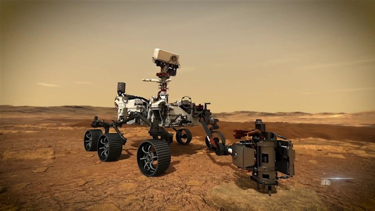

The possibility of life on Mars has excited the imagination. Among the scientific community, the current thinking is that life may have existed on the earth’s ruddy planetary neighbour a long time ago. Understanding this will enrich our studies of evolution and nurture of life outside the earth. The recent NASA mission, Mars 2020, that was launched from Cape Canaveral, Florida on July 30, 2020, landed on the Jezero Crater in Mars on February 18, to much celebration. Of special magnificence was the entry, descent and landing of the mission’s Perseverance rover, described as the ‘shortest and most intense part’. Entering the Martian atmosphere at about 20,000 km per hour, the mission had to bring the Perseverance rover to a halt on the surface in just seven minutes. Also, since it takes 11 minutes for a radio signal to reach the earth from Mars, the mission control could not really guide the landing, and the rover had to complete this process by itself. During the complicated landing process, using a camera eye, the rover checked the ground below to avoid hazardous terrain, all in a few breathtaking minutes.
NASA’s exploration of Mars has focused on finding traces and trails of water that may have existed, and relate it to finding evidence of ancient life. Its earlier Mars expedition which carried the Curiosity rover, landed on August 5, 2012. It identified regions that could have hosted life. Expected to last at least the duration of one Mars year, or about 687 earth days, the science goals this time are to look for signs of ancient life and collect rock and soil samples. Perseverance will take the inquiry made by Curiosity to the next level and search for signs of past life by studying the Jezero Crater. The crater was chosen for study as based on an earlier aerial survey, it was found to be home to an ancient delta. Clay minerals and carbonates were seen, making the crater a good place to search for life’s existence. Further, the rover will study the geology here and store samples in a place that can be accessed by a future mission which would return them to the earth. The rover will test out technologies that could help sustain the presence of humans there in the future. This includes an instrument to extract oxygen from the atmospheric carbon dioxide. The rover also carries a helicopter named Ingenuity that is specially designed to fly in Mars’s thin atmosphere; its sole purpose would be to demonstrate flight on Mars. Finally, to the question whether little green microbes did inhabit Mars in the distant past — only time and Perseverance can answer that.
NASA scientists on Friday presented striking early images from the picture-perfect landing of the Mars rover Perseverance, including a selfie of the six-wheeled vehicle dangling just above the surface of the Red Planet moments before touchdown.The color photograph, likely to become an instant classic among memorable images from the history of spaceflight, was snapped by a camera mounted on the rocket-powered "sky crane" descent-stage just above the rover as the car-sized space vehicle was being lowered on Thursday to Martian soil.The image was unveiled by mission managers during an online news briefing webcast from NASA's Jet Propulsion Laboratory(JPL) near Los Angeles less than 24 hours after the landing.The picture, looking down on the rover, shows the entire vehicle suspended from three cables unspooled from the skycrane, along with an "umbilical" communications cord. Swirls of dust kicked up by the crane's rocket thrusters are also visible.Seconds later, the rover was gently planted on its wheels, its tethers were severed, and the sky crane - its job completed- flew off to crash a safe distance away, though not before photos and other data collected during the descent were transmitted to the rover for safe keeping.The image of the dangling science lab, striking for its clarity and sense of motion, marks the first such close-up photo of a spacecraft landing on Mars, or any planet beyond Earth.

NASA’s exploration of Mars has focused on finding traces and trails of water that may have existed, and relate it to finding evidence of ancient life. Its earlier Mars expedition which carried the Curiosity rover, landed on August 5, 2012. It identified regions that could have hosted life. Expected to last at least the duration of one Mars year, or about 687 earth days, the science goals this time are to look for signs of ancient life and collect rock and soil samples. Perseverance will take the inquiry made by Curiosity to the next level and search for signs of past life by studying the Jezero Crater. The crater was chosen for study as based on an earlier aerial survey, it was found to be home to an ancient delta. Clay minerals and carbonates were seen, making the crater a good place to search for life’s existence. Further, the rover will study the geology here and store samples in a place that can be accessed by a future mission which would return them to the earth. The rover will test out technologies that could help sustain the presence of humans there in the future. This includes an instrument to extract oxygen from the atmospheric carbon dioxide. The rover also carries a helicopter named Ingenuity that is specially designed to fly in Mars’s thin atmosphere; its sole purpose would be to demonstrate flight on Mars. Finally, to the question whether little green microbes did inhabit Mars in the distant past — only time and Perseverance can answer that. All said, this is truely an achievement that will be going down the books as of the most important technological advancements in the history of mankind.
Being able to gather info for other forms of life and be able to finally think outside the curriculum for habitation and earth being the only planet that sustains life.
Adam Steltzner, chief engineer for the Perseverance project at JPL, said he found the image instantly iconic, comparable to the shot of Apollo 11 astronaut Buzz Aldrin standing on the moon in 1969, or the Voyager 1 probe's images of Saturn in 1980. He said the viewer is connected with a landmark moment representing years of work by thousands of individuals. "You are brought to the surface of Mars. You're sitting there, seven meters off the surface of the rover looking down," he said. "It's absolutely exhilarating, and it is evocative of those other images from our experience as human beings moving out into our solar system." The image was taken at the very end of the so-called "seven-minutes-of-terror" descent sequence that brought Perseverance from the top of Mars' atmosphere, traveling at 12,000 miles per hour, to a gentle touchdown on the floor of avast basin called the Jezero Crater. Next week, NASA hopes to present more photos and video — some possibly with audio — taken by all six cameras affixed tothe descending spacecraft, showing more of the sky crane maneuvers, as well as the supersonic parachute deployment that preceded it. Pauline Hwang, strategic mission manager, said the rover itself "is doing great and is healthy on the surface of Mars, and continues to be highly functional and awesome. The vehicle landed about two kilometers from tall cliffs at the base of a ancient river delta carved into the corner of the crater billions of years ago, when Mars was warmer, wetter and presumably hospitable to life. Scientists say the site is ideal for pursuing Perseverance's primary objective — searching for fossilised traces of microbial life preserved in sediments believed to have been deposited around the delta and the long-vanished lake it once fed.
APPLE IPHONE 12 MINI: Fit to Size
For the first time in many years, Apple is making an intentionally small phone. The key, though, is that unlike other small phones, Apple isn’t putting worse parts in it. The iPhone 12 mini has all the same features as the larger iPhone 12. It has the same cameras, same processor, same everything save for two things: screen size and battery life. It’sIt’s traditional to refer to phones by their screen size and for the iPhone 12 mini, that number is 5.4 inches diagonally. But that number doesn’t tell the story at all. The phone is smaller than the traditional 4.7-inch-home-button iPhone design we saw from the iPhone 6 on through the 6S, 7, 8, and 2020 SE models, even though the screen itself is larger. That’s because the 12 mini, just like the rest of the iPhone 12 line, has switched over to Apple’s more modern OLED screens and Face ID notch for unlocking. Those two features allow Apple to design the phone with minimal bezels and maximal screen.Despite the smaller screen size, you don’t miss out on as much as you might expect. Compared to the regular iPhone 12 with a 6.1-inch screen, there are maybe one or two lines of text that are cut off. What you actually miss out on is that sense of immersion you can get from a bigger screen when you’re playing a game or watching a movie. Those were the only times this screen felt cramped. If there is a knock on the screen, it’s that it doesn’t offer a high refresh rate like many Android phones — including the Pixel 5, which isn’t too far off from the iPhone 12 mini’s size. I’m more annoyed that the Pro iPhones don’t have it, though — here on the mini, I think battery life is more important. To me, the iPhone 12 mini is most reminiscent of the iPhone 5. Yes, it is bigger and has a glass rear panel instead of aluminum, but it shares the squared-off aluminum sides and general feeling of being an object that was designed to be proportional to your hand. This is a phone that you can get a grip on, literally.
The iPhone 12 mini feels like the first iPhone in a long time with a different goal. It was designed around the human hand and real pockets. It is an object that doesn’t aim to be judged against other smartphones (which are mostly big now), but to be judged simply as an object you need to hold. You judge a spatula or can opener or whatever by whether it’s easy to grip, by whether it fits in your hand. It’s about time we got back to judging smartphones that way, too. It’s a very good camera system, and that’s not usually something I get to say when I’m talking about a smaller phone. Usually smaller means cut corners and the camera is often the place where those corners get cut. Not so here: video is excellent at handling different lighting conditions, portrait mode is usually more than good enough for Instagram, and you can trust the camera to take the photos you expect when you tap the shutter. And you can expect them to get saved quickly. Next year, though, I hope Apple pays a little more attention to the secondary camera sensors. The selfie camera is fine, but it’s increasingly disappointing compared to the advances on the main camera. I can take some dramatic shots with the ultrawide — the tree you see above is objectively boring but looks dope with this lens. Still, if you zoom in even a little, you can see that on a technical level the ultrawide is also far behind the main sensor. As I said above, I don’t have ergonomic reasons to need a smaller phone. My advice for most people is to get the regular iPhone 12 for its better battery and bigger screen.
For me, the reason to prefer the iPhone 12 mini is hard to state in words, but I’ll give it a shot. With every phone, you can tell what it was designed around. There’s some key feature that everything else has to contend with, that sets the hardware narrative. For many years now, that feature was the screen. Making it big, bright, beautiful, and bezel-less was the big thing driving phone design, and all other considerations were secondary. The iPhone 12 mini feels like the first iPhone in a long time with a different goal. It was designed around the human hand and real pockets. It is an object that doesn’t aim to be judged against other smartphones (which are mostly big now), but to be judged simply as an object you need to hold. You judge a spatula or can opener or whatever by whether it’s easy to grip, by whether it fits in your hand. It’s about time we got back to judging smartphones that way, too. The reality of 5G in the US continues to be very different from the hype. It’s radically dependent on which network you’re on and what part of the country or city you’re in. Often the speeds are equivalent to LTE. If you stand out on the right street corner and get mmWave, you can indeed get speeds that are astonishing — until you walk down the street and they drop back to the same LTE we’ve used for years.
Linkin Park Music Floods Chart, Sales Surge 5,300% After Chester Bennington's Death
Linkin Park’s music is flooding back into charts worldwide after the tragic death of singer Chester Bennington. In the latest evidence of sales spiking, nine of the band’s albums are featured in the U.K.’s Official Chart Update just released. U.S. sales have already risen by some 5,300%, according to Nielsen Music, with at least three albums on their way back in the Billboard Hot 100. In Britain, seven of them are on track to enter the Top 100 inside the Top 40 when the final list is published on Friday, July 28. Bennington, 41, was found dead at his home on July 20 and a coroner confirmed that hanged himself. The sales surge is the latest to be seen after the death of a star, most recently with Soundgarden and Audioslave after the death in May of Bennington’s friend Chris Cornell, 52, who also hanged himself. Record industry analysts said streams and download sales were now making the charts increasingly reactive to news, which can be tragic deaths (David Bowie, Prince and more) an exceptional televised concert (Super Bowl shows or Glastonbury) or other news breaks (sales rising after stars being in the headlines). Nielsen Music said that on Thursday and Friday U.S. sales rose to 204,000 (versus s a previous two-day of 1,600), up 13,000%. The total volume over three days was 259,000 song sales, 64,000 album sales and 53.6 million streams. This includes all Linkin Park, Linkin Park/Jay-Z, Dead By Sunrise and the Stone Temple Pilots with Chester Bennington content.
Linkin Park’s 2001 debut Hybrid Theory (Warner Brothers), home of the hit “In The End,” places the highest on the U.K. “midweek” chart at No. 3, followed by One More Light - the most recent album only released in May - at No. 5. Meteora, the 2003 release that was Linkin Park’s first British No. 1 - is at No. 7. Also in the U.K. chart at No. 12 is the 2007 album Minutes To Midnight. The former chart-topper, produced by Rick Rubin, starts with the powerful medley “Wake” and “Given Up.” The midweek update also has placings for the 2004 collection with Jay-Z, Collision Course (30), A Thousand Suns from 2010 (37) and Living Things from 2012 (40). Reanimation and The Hunting Party are placed lower. Among singles, “In The End” is at No. 9, followed by “Numb” and “Numb/Encore.” Billboard's Album Sales chart ranks the top-selling albums of the week based only on traditional album sales and does not include track equivalent album units and streaming equivalent album units. "Hybrid Theory"'s reappearance on the chart has been fueled by the album's 20th-anniversary deluxe reissue, which was made available on October 9 via Warner Records. The set comes in multiple physical and digital formats, including a super deluxe box set, super deluxe vinyl box set and deluxe CD that all come with the original "Hybrid Theory" with 12 previously released tracks from the album era.
The limited-edition super deluxe box set consists of five CDs, three DVDs, three vinyl records, an 80-page illustrated book featuring previously unseen photos, a replica tour laminate and a poster of late frontman Chester Bennington, and three lithographs of new art by Mike Shinoda, Joe Hahn and "Hybrid Theory" art director and reissue art director Frank Maddocks. The vinyl box set features "Hybrid Theory", "Reanimation" and "B-side Rarities" on vinyl. Last month, "Hybrid Theory" was officially certified 12 times platinum by the RIAA (Recording Industry Association of America) for sales in excess of 12 million copies. "Hybrid Theory" — the band's original name before it was changed to LINKIN PARK for legal reasons — was issued in October 2000 and was a breakout success for the group, which had formed in 1996 and had played the Los Angeles club scene for several years. The album yielded four massive hit singles — "One Step Closer", "Crawling", "Papercut" and "In The End" — while going on to sell more than 10 million copies in the U.S. alone. Bennington was found dead in his Los Angeles-area home on July 20, 2017 after hanging himself. LINKIN PARK headlined an all-star tribute concert for Bennington in October 2017 in Los Angeles but has not announced any future plans.
Album
Revenue
Release Year
Songs
Awards
Rating
Hybrid Theory
$2.6M
2000
Crawling, One Step Closer
Grammy Award - Crawling
4
Meteora
$3.2M
2000
Somewhere I Belong, Breaking the Habit
Viewers Choice Award - Breaking the Habit
4.2
Minutes to Midnight
$2.2M
2006
Bleeding Out, Leave out All the Rest
Best Aired Award- Faint
3.5
A Thousand Suns
$4.5M
2008
Catalyst, Waiting for the End
MTV Video Award
4
About Us
Contact: +91-9988770034
Email: thenewyorktimes@ny.in
Head Office: Second Phase, NewDelhi. 1003002, Greater Noida.